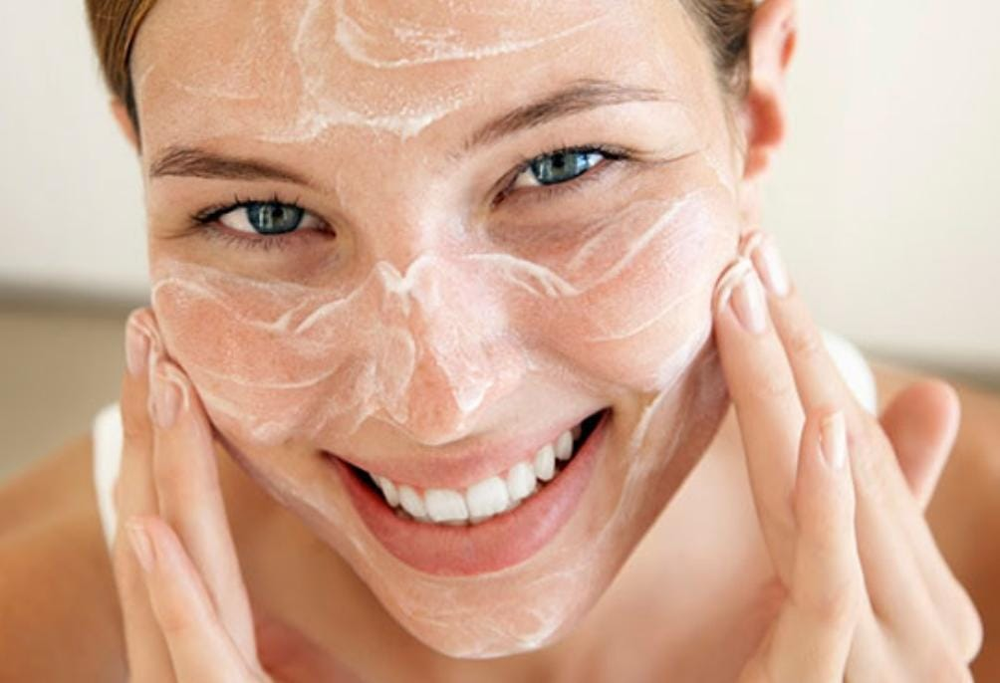

L´ORÉAL - REVITALIFT ÁCIDO HIALURÓNICO CREMA FACIAL NOCHES
Es una crema en gel de doble acción que combina propiedades antiarrugas con control de brillo. Está diseñado para reducir la apariencia de arrugas e hidratar la piel con ácido hialurónico, proporcionando un acabado mate que controla el brillo. Es ideal para piel mixta a grasa.
Beneficios
*Acción Antiarrugas
*Control de Brillo
*Revitaliza
*Hidrata
*Anti-acné
¿Cómo aplicarlo?
" 1 "
Limpieza:
Antes de aplicar cualquier producto, asegúrate de que tu piel esté limpia. Usa un limpiador suave adecuado para tu tipo de piel.
" 2 "

Aplicación:
Aplica una pequeña cantidad de la crema en gel de manera uniforme sobre tu rostro y cuello.
" 3 "
Masajea:
Aplica con movimientos de masaje por la mañana y/o por la noche sobre la piel limpia.
" 4 "
Secalo:
Secalo, evitando el contacto con el área de los ojos para cualquier malestar o incomodidad.